photographie
Respirer est une édition qui explore la montagne dans toute sa richesse : un lieu où la beauté brute côtoie la fragilité,
où chaque ascension est un mélange de contemplation, de défi et d’humilité. À travers des récits captivants, des regards
sur la faune et la flore, et des conseils pratiques, cette édition met en lumière la complexité et la grandeur de ces paysages.
La mise en page, à la fois épurée et poétique, invite à une lecture apaisée et réfléchie. La typographie à empattements,
avec son caractère délicat et évocateur, accompagne les textes avec élégance, apportant une dimension narrative qui traduit
la sensibilité de l’édition.
Les photographies contemplatives, quant à elles, mettent en lumière la texture brute et organique de la montagne :
les fissures des roches, la douceur immaculée de la neige, ou encore la rugosité des écorces. Chaque élément visuel est
pensé pour capturer l’équilibre fragile entre la sérénité des paysages et la puissance imposante des sommets, incarnant
pleinement l’expérience unique de la montagne.
projet fictif
 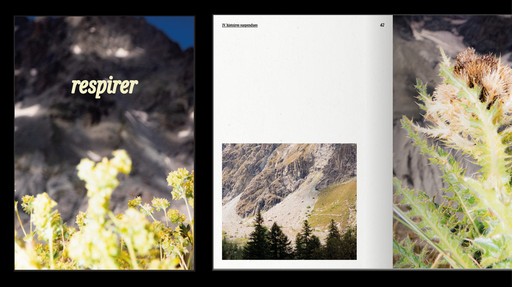
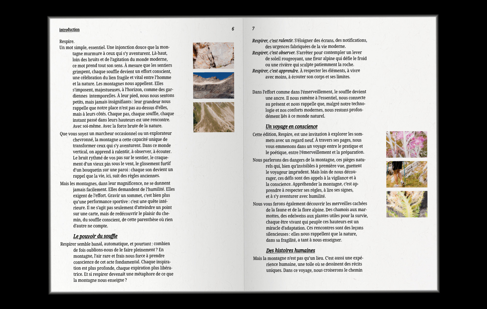
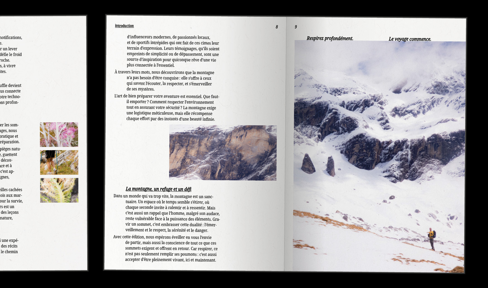
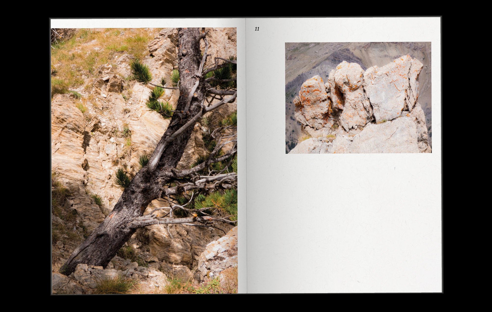
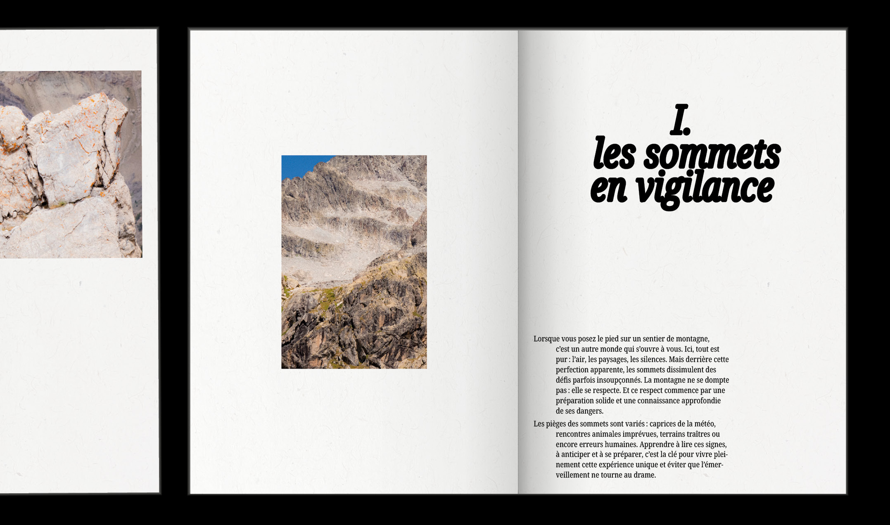
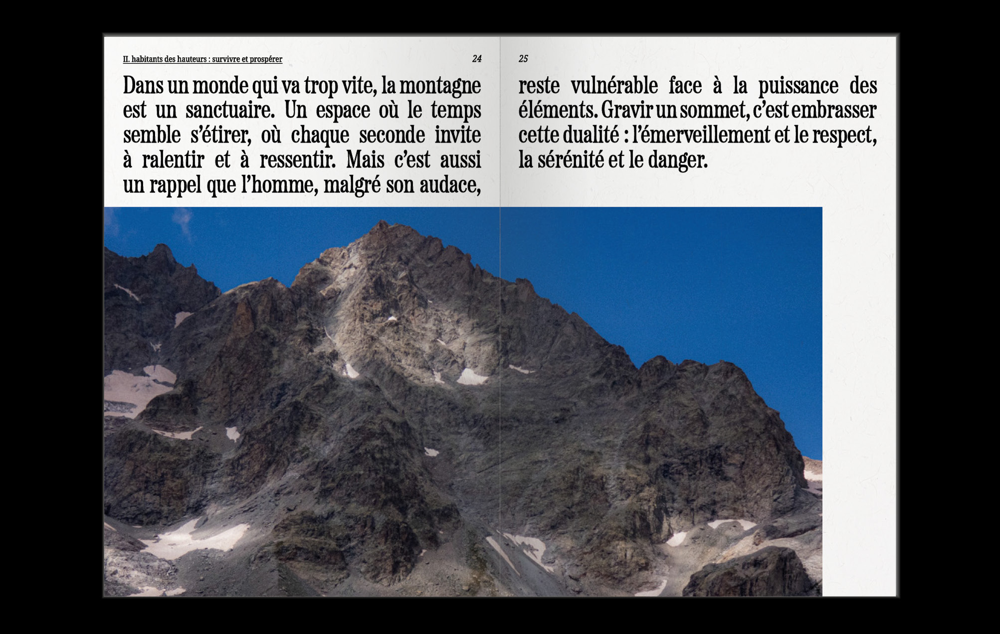
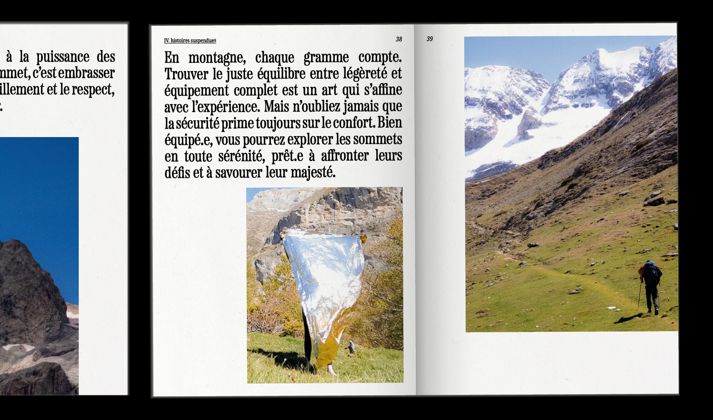
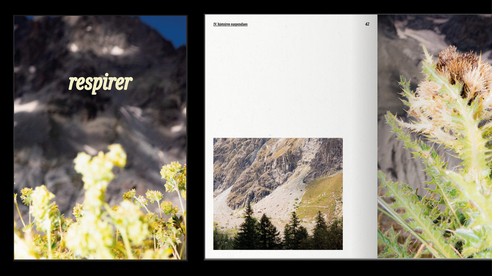
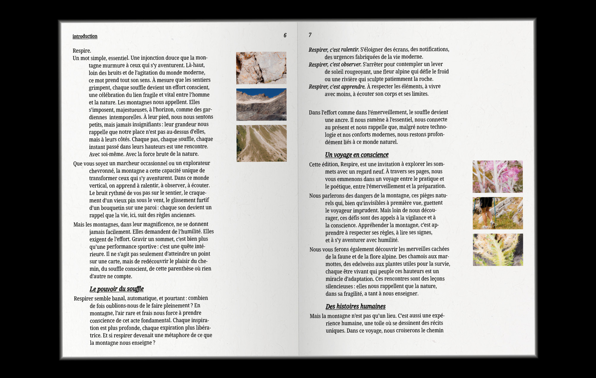
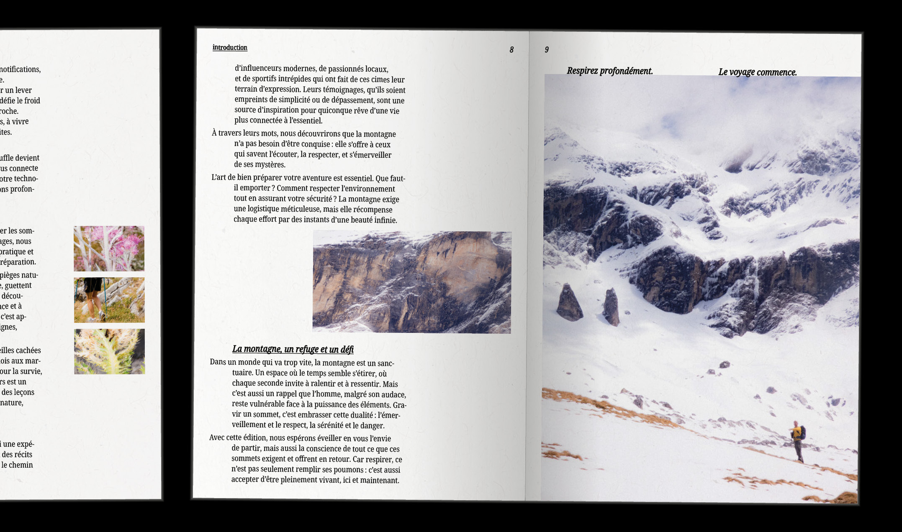
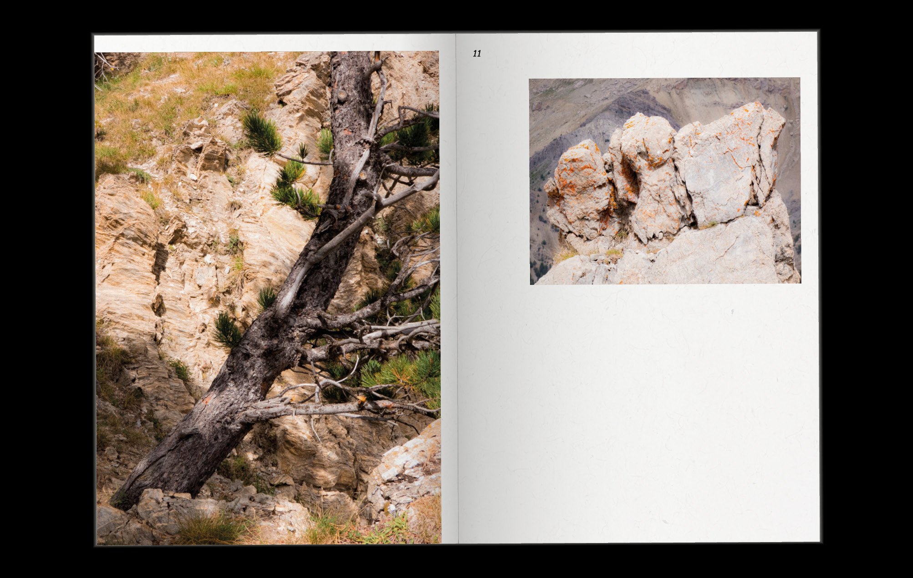
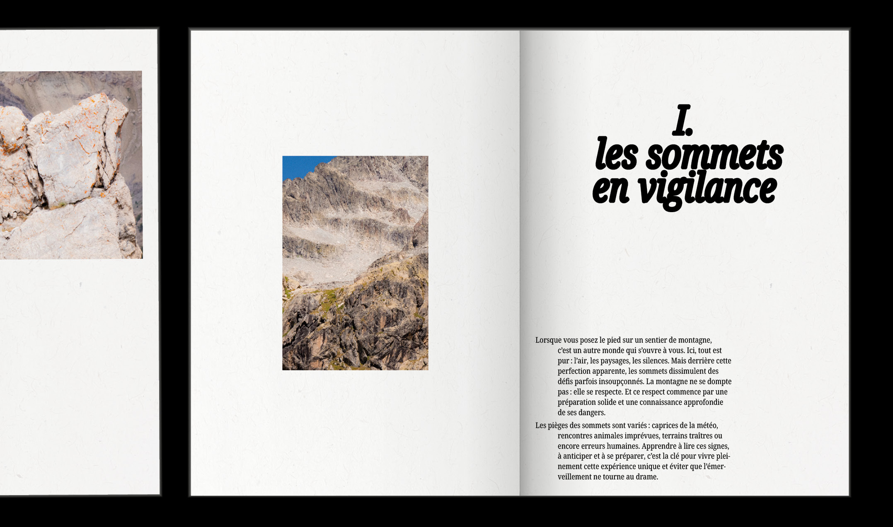
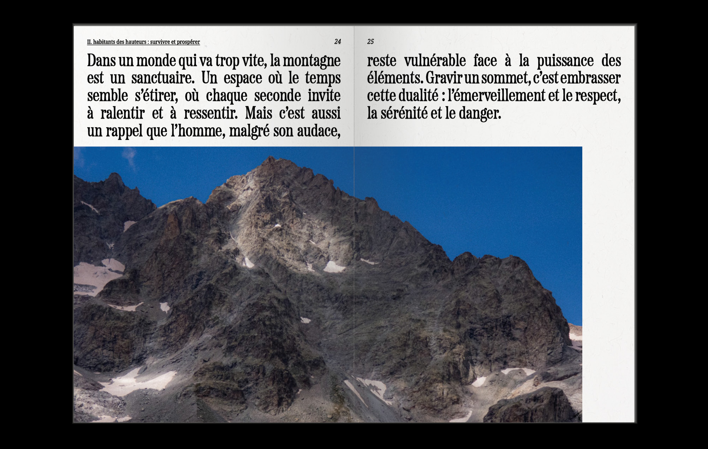
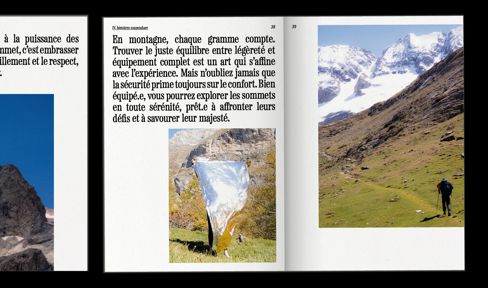